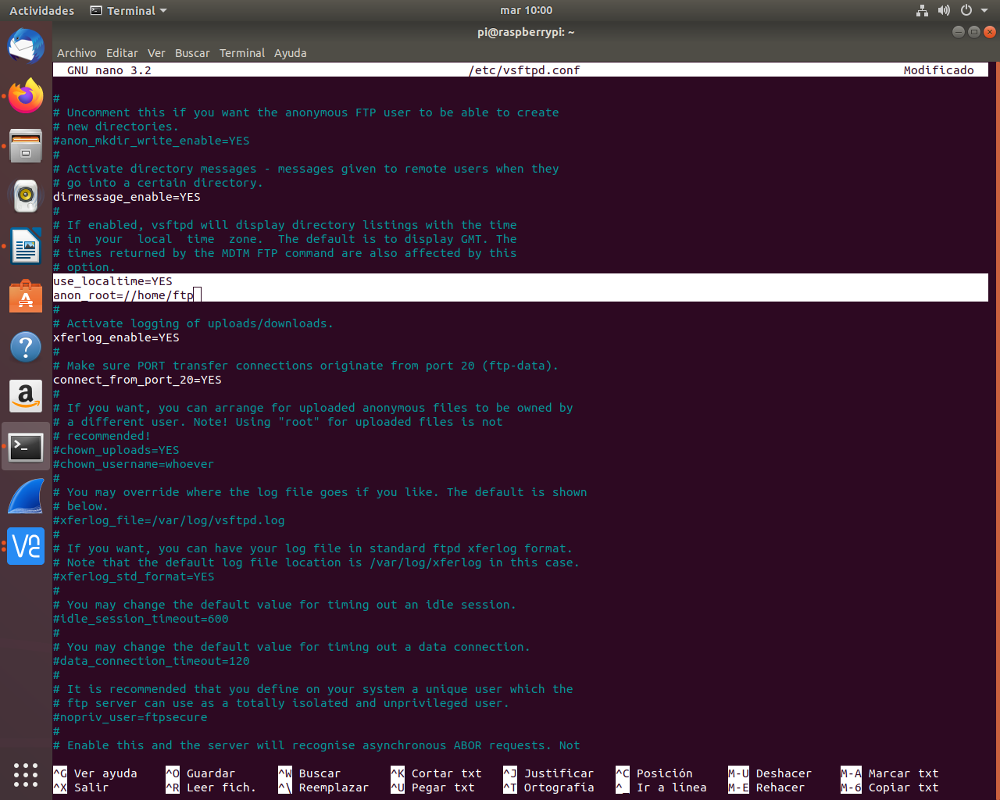
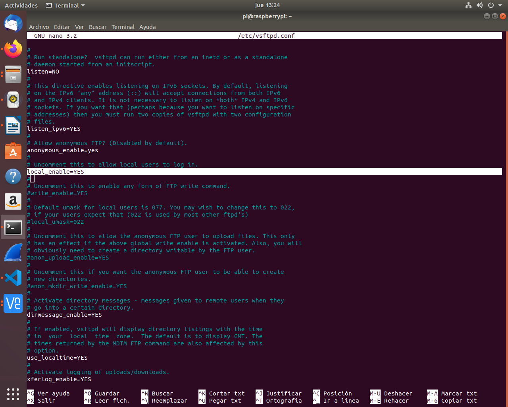
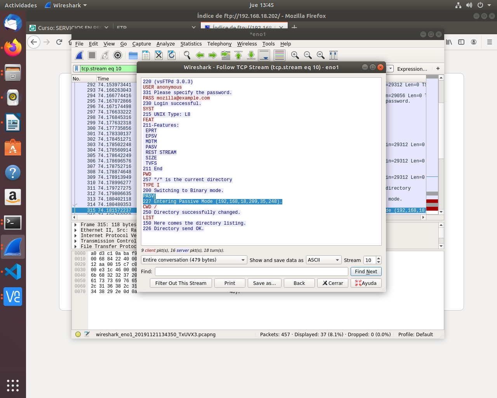

Instala el servidor vsftpd en la Raspberry Pi con que tenga las siguientes características:
1- Que sea un servidor FTP anónimo para descargas.
2- Que sea un servidor FTP para usuarios de sistema y que puedan tanto descargar como subir archivos.
3- Funcione en modo pasivo.
4- Habilita los logs.
5- Cambia el mensaje de bienvenida